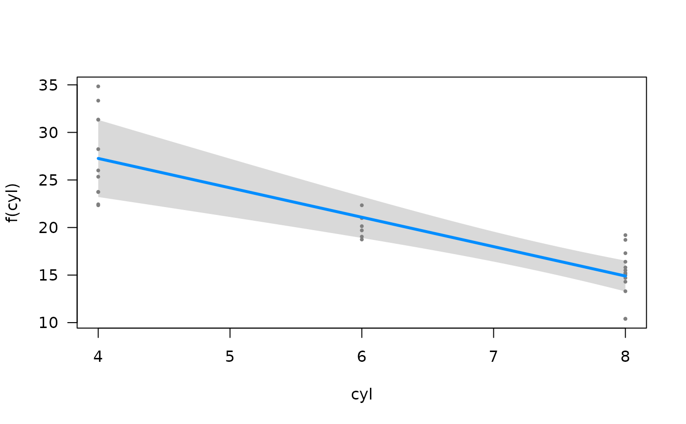

![[Stable]](figures/lifecycle-stable.svg)
Provides an interface to visualize the model results with visreg package, to show how a predictor variable x affects an outcome y.
Arguments
- breg
A regression object with results (must pass
assert_breg_obj_with_results()).- idx
Length-1 vector. Index or name (focal variable) of the model. This is different from
idxin br_show_forest_ggstats, only one model is supported to visualized here, so only length-1 vector is supported asidx.- ...
Arguments passing to
visreg::visreg()exceptsfitanddata.
See also
Other br_show:
br_show_coxph_diagnostics(),
br_show_fitted_line_2d(),
br_show_forest(),
br_show_forest_circle(),
br_show_forest_ggstats(),
br_show_forest_ggstatsplot(),
br_show_nomogram(),
br_show_residuals(),
br_show_risk_network(),
br_show_survival_curves(),
br_show_table(),
br_show_table_gt()
Examples
if (rlang::is_installed("visreg")) {
m <- br_pipeline(mtcars,
y = "mpg",
x = colnames(mtcars)[2:4],
x2 = "vs",
method = "gaussian"
)
if (interactive()) {
br_show_fitted_line(m)
}
br_show_fitted_line(m, xvar = "cyl")
}
#> subset model list with idx: 1
#> model call: stats::glm(formula = mpg ~ cyl + vs, family = stats::gaussian, data
#> = data)
